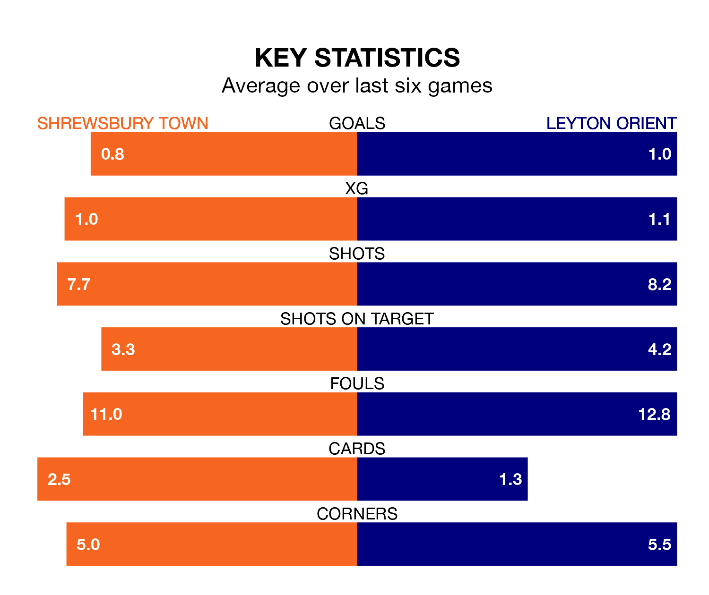

Shrewsbury Town face Leyton Orient at the Croud Meadow on Saturday lunchtime looking to secure a first win in seven EFL League One games.
The Shrews have lost two and drawn four matches since they last earned three points – against Carlisle United on March 16.
They face an Orient side who have won just one and drawn one over that time.
Shrewsbury are 18th in the table after 45 games, of which they have won 13 and drawn nine, earning 48 points.
Orient are six places ahead of Town in 12th, with 17 wins and 11 draws putting them on 62 points.
With 34 goals in 45 games so far this season, the Shrews are the league's lowest scorers with 0.8 goals per game. And they are conceding more than average, letting in 64 goals at a rate of 1.4 per game.
The visitors are also below average scorers, with 1.1 goals per game, compared to a league average of 1.3. They have conceded 1.2 goals per game.
Shrewsbury's last match was on Saturday, a 1-1 draw against Charlton Athletic, with Daniel Udoh getting the goal for the Shrews.
Orient lost 1-0 against Fleetwood Town last time out, also on Saturday.
Updated: 07:59 (UTC), 26/04/24